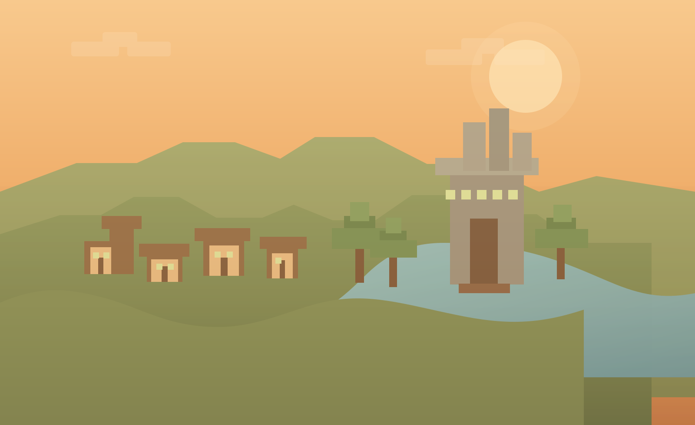

Schau nach, wer gerade online ist.

Willkommen auf unserem Server
Willkommen bei 5er Pasch.
Ein Minecraft-Server, fünf Freunde und ziemlich viele Ideen. Entdecke unsere Bauprojekte, Abenteuer und die Welt, die wir gemeinsam aufbauen.
Fünf Spieler, eine Survival-Welt und immer neue Ideen.
Wir bauen, erkunden und machen einfach unser Ding.
Von der ersten Hütte bis zu den großen Projekten.
Live vom Server
Status & Serverinfos
Wer ist online? Und auf welcher Version läuft unser Server?
Serverstatus
Noch nicht verbunden
Trage deine Serveradresse in config.js ein.
Spieler online
– / –
Minecraft Version
–
Serveradresse
Noch nicht festgelegt
Was gerade entsteht
Unsere Bauprojekte
Von der ersten Farm bis zur riesigen Base: Hier entsteht gerade etwas.
Hier siehst du zurzeit Beispielprojekte. Unsere echten Bauwerke folgen bald.
Unsere Meilensteine
Weltfortschritt
Alle kleinen und großen Meilensteine unserer Survival-Welt.
Alles auf einen Blick
Unsere Weltkarte
Unsere Welt von oben: Orte, Wege und alles, was wir gebaut haben.
BlueMap
Eure Karte kommt hier rein
Sobald BlueMap eingerichtet und mit einer HTTPS-Adresse erreichbar ist, wird hier automatisch eure Live-Weltkarte eingebettet.
Hinweis: Für die Einbettung braucht ihr eine funktionierende BlueMap-URL. Cloudflare hostet die Website unabhängig davon.
Die Crew
Die Spieler hinter 5er Pasch
Die fünf Leute, die hier alles auf den Kopf stellen.
Was neu ist
Letzte Updates
Neue Projekte, kleine Erfolge und ab und zu auch mal Chaos.